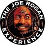

Here is Some of my favorite Games and Podcasts
Podcasts

is a podcast hosted by American comedian, presenter, and UFC color commentator Joe Rogan. It launched on December 24, 2009, on YouTube by Rogan and comedian Brian Redban, who was its sole co-host and producer until 2012 when Jamie Vernon was hired to co-produce. Vernon would eventually take over production.[3][4] By 2015, it was one of the world's most popular podcasts.
Life lessons from the smartest people on the planet
Including guests like Dr Jordan Peterson, Jocko Willink, Dr Andrew Huberman, Ryan Holiday, James Clear, Robert Greene, Balaji Srinivasan, Steven Pinker, Alex Hormozi, Douglas Murray, Michael Malice, James Smith, Dr David Sinclair, Mark Manson and more.
Call of Duty: Modern Warfare 2 is a 2009 first-person shooter game developed by Infinity Ward and published by Activision. It is the sixth installment in the Call of Duty series and the direct sequel to Call of Duty 4: Modern Warfare.
FIFA 23 is a football video game published by Electronic Arts. It is the 30th and final installment in the FIFA series that is developed by EA Sports, and the final installment under the FIFA banner, and released worldwide on 30 September 2022 for Nintendo Switch, PlayStation 4, PlayStation 5, Windows, Xbox One and Xbox Series X/S.